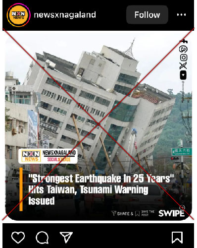
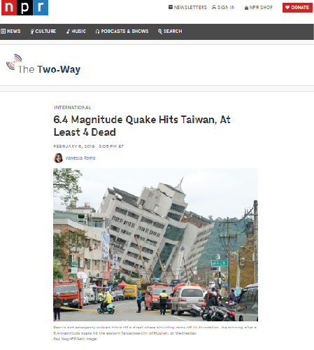

Fact Check | Old images of leaning building falsely linked to April 2 Taiwan earthquake
Fact-check article date: April 4, 2024 | Updated: April 4, 2024Fact-check by ANDRE M. CHANG
Claim reviewed: "Images of leaning building falsely linked to April 2, 2024 Taiwan earthquake."
Claim date: April 2, 2024

Rating: 1
False1="False", 2="Mostly false", 3="Half true", 4="Mostly true", 5="True"
Fact:
Screenshot taken on April 4, 2024, from NPR website
Published Date: February 6, 2018
Caption: Rescue and emergency workers block off a street where a building came off its foundation, the morning after a 6.4 magnitude quake hit the eastern Taiwanese city of Hualien, on Wednesday. Paul Yang/AFP/Getty Images
Published Date: February 6, 2018
Caption: Rescue and emergency workers block off a street where a building came off its foundation, the morning after a 6.4 magnitude quake hit the eastern Taiwanese city of Hualien, on Wednesday. Paul Yang/AFP/Getty Images
Reference:
Romo, Vanessa. “6.4 Magnitude Quake Hits Taiwan, at Least 4 Dead.” NPR, 6 Feb. 2018, www.npr.org/sections/thetwo-way/2018/02/06/583695625/6-4-magnitude-quake-hits-taiwan-at-least-2-dead. Accessed April 4, 2024.
Romo, Vanessa. “6.4 Magnitude Quake Hits Taiwan, at Least 4 Dead.” NPR, 6 Feb. 2018, www.npr.org/sections/thetwo-way/2018/02/06/583695625/6-4-magnitude-quake-hits-taiwan-at-least-2-dead. Accessed April 4, 2024.